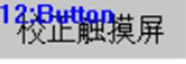
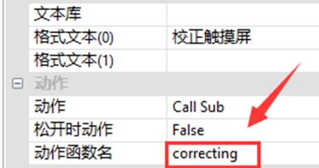

|
类型 |
触摸屏指令 |
|
描述 |
进行触摸屏校正，此时不要刷新屏幕，校正后参数会自动保存。 注意：该指令连接ZHD400X示教盒、500X示教盒或支持该指令的手持盒设备触摸屏上才起效！ 【校正方式】 方式1：通过点击设置界面的Touch Adjust功能进入触摸校正界面 （通过左上，右上，左下，右下，左上，右上，左下，右下的方式连续点击，可以弹出设置窗口，可以进行触摸校正。） 方式2：连接控制器后，通过控制器的TOUCH_ADJUST指令来触发校正。 方式3：不连接控制器，按下12(F2)按键不松开，再按下11(F1)按键。 不连接控制器，按下16 (F6)按键，不松开时继续按下11 (F1)按键 |
|
语法 |
TOUCH_ADJUST () |
|
适用控制器 |
支持RTHmi |
|
例子 |
用例1： (1) 使用一个Hmi按钮控件  (2) 在该控件的“属性”中调用子函数  (3) Basic子函数 global sub correcting() TOUCH_ADJUST() end sub (4) 运行含有该指令的程序项目，点击该按钮 (5) 直接进入触摸校正界面，后根据“+”的位置长按进行校正即可。 用例2：直接放在程序初始化函数里 TOUCH_ADJUST () ‘进行触摸校正 |
|
相关指令 |
/ |